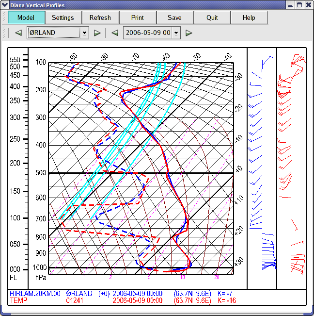
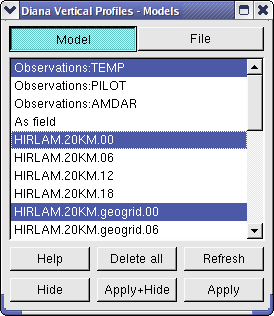

When vertical profiles is selected a window showing ascents is
displayed. In addition, all stations will be marked on the map as yellow
dots. A station is selected directly on the map or through the vertical
profile window. The selected station turns red on the map. The time can be
changed either in the main window or in the vertical profile window.

Station and time can be selected in three different ways from the vertical
profile window:
By clicking the station name/time and selecting name/time from the list.
By clicking on the arrows to the right/left of the station name/time.
The next/previous station/time in the list will be selected.
By using the arrow keys (up/down) for station and (right/left) for time.
The next/previous station/time in the list will be selected.
From the vertical profile window the following options are available:
Model Select model.

Settings Controls different settings for the diagram; i.e.
colours, line widths and line types where applicable. In addition
pressure scope and temperature scope is set. The new settings are
displayed when Apply is pushed. To return to the default
values, push Default.
Update Updates positions in the main window and list, changes
to the same time as the main window if possible.